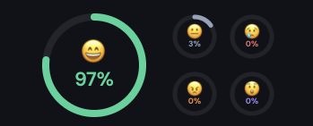

HappyFace analysiert deine Mimik in Echtzeit und hilft dir, auch im HomeOffice bewusst positiv zu bleiben — mit langfristig messbarem Effekt.
Ohne Kolleg:innen um dich herum merkst du oft nicht, wie sich deine Stimmung über den Tag verändert.
Im HomeOffice fehlt der soziale Spiegel. Niemand sagt dir, dass du seit Stunden die Stirn runzelst.
Studien zeigen: Wir nehmen unsere eigene Mimik kaum wahr. Negative Gesichtsausdrücke verstärken negative Emotionen — ein Teufelskreis.
Chronisch angespannte Mimik erhöht Cortisol, schwächt das Immunsystem und senkt die Produktivität — ohne dass du es merkst.
Die Verbindung zwischen Gesichtsausdruck, Emotionen und Gesundheit ist eine der am besten erforschten in der Psychologie.
Eine Mega-Studie mit 3.878 Teilnehmenden aus 19 Ländern bestätigt: Lächeln beeinflusst direkt, wie wir Emotionen erleben. Dein Gesichtsausdruck formt deine Stimmung — nicht umgekehrt.
Nature Human Behaviour, 2022Forscher der University of Oxford zeigen: Glückliche Mitarbeitende sind 13% produktiver. Motivation, Kreativität und Problemlösungsfähigkeit steigen messbar.
Oxford Saïd Business SchoolEchtes Lächeln (Duchenne Smile) senkt den Cortisolspiegel und fördert die Produktion von Immunzellen. Der Effekt ist messbar in Herzrate und autonomer Reaktivität.
PubMed · Soussignan, 2002HappyFace sitzt unsichtbar in deiner macOS-Menubar und analysiert deine Mimik — sanft, privat und ohne dich zu stören. Ein farbiger Punkt zeigt dir live, wie es dir geht.

Echtzeit-Analyse deiner Mimik — bis zu 10× pro Sekunde. Reagiert sofort auf Veränderungen.
Verfolge deinen Stimmungsverlauf über 60s, 60min, 24h oder die ganze Woche. Wie ein Activity Monitor für dein Wohlbefinden.
Das Menubar-Icon wechselt live die Farbe je nach dominanter Emotion. Ein Blick genügt.
Keine Cloud, keine Server, keine Daten die dein Gerät verlassen. Deine Mimik gehört dir allein.
Kostenlos. Für macOS. Keine Registrierung.
v0.1.0 · ~8 MB · macOS 13+ · Apple Silicon (M1/M2/M3/M4)